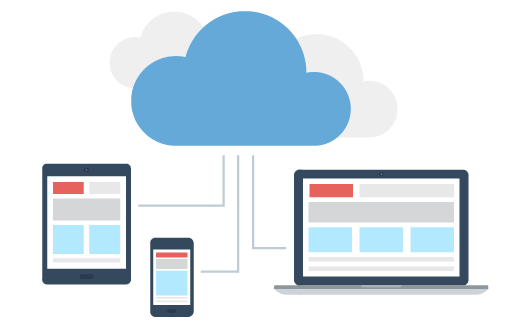

Cybesecurity Management Strategies
The good news is that, although these cyber threats are real and costly to your enterprise’s safety and security, your business doesn’t need to take the damages. Your organization will need to go through an IT Transformation by being proactive and vigilant. Here are five different cyber security strategies you need to implement in order to keep your business safe and secure:
1. Create a security system: Unlike traditional administrative structures where operations and enforcement of rules are handled from the top-down, creating a security system using your human capital will need to be organized from the bottom-up. This security system to protect your enterprise starts by securing devices your employees use in your business. Work on creating a culture of accountability so everyone will communicate with systems don’t seem to being working as intended.
2. Increase your employee skillset: Your cybersecurity is only as strong as its weakest link. Regularly train your team on the latest IT best practices. Help them understand that their efforts are critical to protecting company assets and that it’s in their best interest to increase their IT knowledge base regardless of whether they’re a software developer or a marketing specialist. While it may be expensive upfront, paying for coding boot camps for your employees is a worthwhile investment.
3. Backup your data: Just like the best YouTubers constantly create backups of video footage they record, you need to constantly backup your organization’s data. Always backup your data, files and any electronic information that is vital to your business as well as the most recent drafts/iterations of projects your team is working on.
4. Put the cloud to work: Although the cloud still has its risks, you are less likely to lose critical data by saving data to the cloud. Using the cloud for data storage is an economical option for small to mid-sized businesses. As smaller businesses scale and grow as result of increased sales, cloud storage and cloud security tools can scale with the business. Cloud options are continuously improving so your business can be sure to always have the latest options for storage and cyber security.

5. Invest in your IT infrastructure: Install antivirus programs and firewalls on your computers. Firewalls will discourage the average cybercriminal seeking to do damage your company. Regularly update your computer security systems. Don’t be shy when it comes to investing in your IT infrastructure.